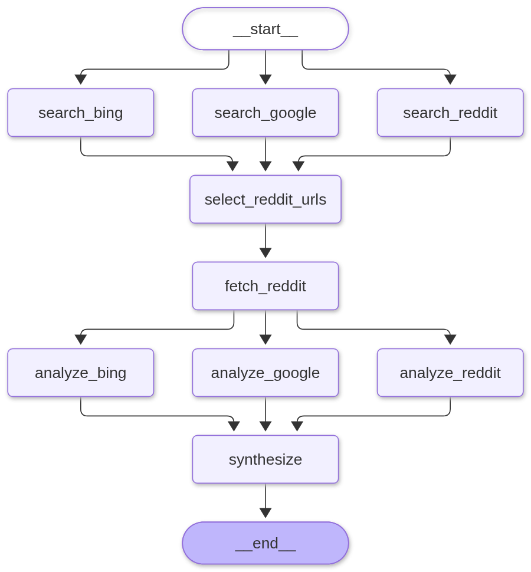
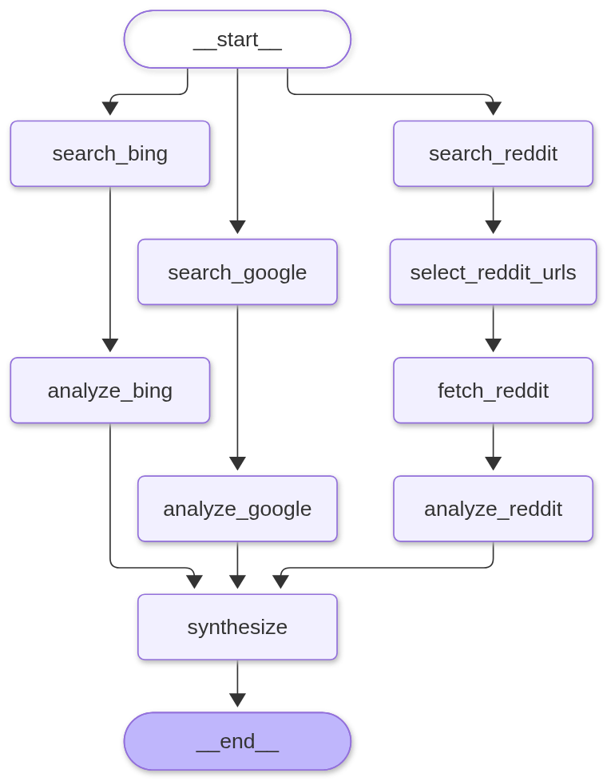

Three searches, three analyses, one join
A multi-source research agent: Google and Bing fan out from START by default, with an optional Reddit branch (REDDIT_ENABLED=true) that adds a structured-output selector and comment fetch. Analyses run in parallel and one synthesis writes the answer. The model is DeepSeek; sources come from recorded snapshots by default or BrightData with --live. --critical moves Google/Bing off the Reddit branch, and --loose-join shows why that edit needs an explicit list-edge join.
Key and run (uv)
cd assets\examples\0011-langgraph-advanced Copy-Item .env.example .env # first time only; fill DEEPSEEK_API_KEY (+ BRIGHTDATA_API_KEY for --live) uv sync # .env: REDDIT_ENABLED=false (default); set true for the Reddit branch uv run python agent.py # two sources (Reddit off) uv run python agent.py --live # BrightData (needs BRIGHTDATA_API_KEY) uv run python agent.py --critical # move Google/Bing off the Reddit branch uv run python agent.py --critical --loose-join # break the join on purpose uv run python agent.py --fail bing # one source returns nothing uv run python agent.py --check # test the provider, no model calls uv run python agent.py --zones # list active BrightData zones uv run python agent.py --mermaid # print the graph source
DEEPSEEK_API_KEY can live in .env or the shell. A full run (Reddit on) makes five DeepSeek calls: one selector, three analyses, one synthesis. The default two-source run makes three. Set REDDIT_ENABLED=true in .env to add Reddit. --live needs BRIGHTDATA_API_KEY and a SERP zone; the default snapshot provider needs neither.
Both graph shapes


synthesize must be a list edge.What the default run prints (two sources, live DeepSeek)
question: Should a small support team build its agent on LangGraph or a plain tool loop? graph: reference (fan-out, fan-in) source: snapshot reddit: off (REDDIT_ENABLED=false) [ 0.0s] search_bing 5 results [ 0.0s] search_google 5 results [ 2.5s] analyze_bing analyses += bing [ 2.5s] analyze_google analyses += google [ 4.8s] synthesize 173 words sources: google=5 bing=5 reddit=0 | urls=0 | threads=0 graph: bing, google | nodes=5 | 4.8s
Reddit is off by default: two searches, two analyses, one synthesis, five node executions.
With REDDIT_ENABLED=true (the full graph)
question: Should a small support team build its agent on LangGraph or a plain tool loop? graph: reference (fan-out, fan-in) source: snapshot reddit: on [ 0.0s] search_bing 5 results [ 0.0s] search_google 5 results [ 0.0s] search_reddit 5 results [ 1.6s] select_reddit_urls 3 urls [ 1.6s] fetch_reddit 3 threads / 9 comments [ 4.1s] analyze_bing analyses += bing [ 4.4s] analyze_google analyses += google [ 4.4s] analyze_reddit analyses += reddit [ 6.6s] synthesize 180 words sources: google=5 bing=5 reddit=5 | urls=3 | threads=3 graph: bing, google, reddit | nodes=9 | 6.6s
The three searches complete together because they are one superstep; the three analyses do the same after the fetch. One synthesis, nine node executions.
The join bug, on purpose
With REDDIT_ENABLED=true, wire the final join with separate edges and the third branch arrives in a later superstep:
[ 2.4s] analyze_bing analyses += bing [ 2.7s] analyze_google analyses += google [ 5.2s] synthesize 179 words <- fires with two analyses [ 7.6s] analyze_reddit analyses += reddit [ 9.9s] synthesize 180 words <- fires again with all three ... nodes=10 | 9.9s
With separate add_edge calls, synthesize fires when the reachable predecessors finish, then fires again when the Reddit branch arrives. The first answer is wasted and the run pays for an extra call. A list edge is the barrier:
graph.add_edge(
["analyze_google", "analyze_bing", "analyze_reddit"], "synthesize"
)One dead source
[ 0.0s] search_bing 0 results [ 1.6s] analyze_bing analyses += bing ... **Missing/empty sources:** Bing returned no results. sources: google=5 bing=0 reddit=5 | urls=3 | threads=3 | nodes=9 | 6.3s
The source node returns an empty list, the analyzer writes a placeholder, and synthesis names the gap. Failure is normalized at the boundary instead of raising into the join.
README.md
# 0011 — LangGraph, advanced: fan-out, fan-in, and a join that fires early
A multi-source research agent as a graph:
```
START -> search_google ─┐
-> search_bing ─┼─> select_reddit_urls -> fetch_reddit -> analyze_reddit ─┐
-> search_reddit ─┘ │
├─> synthesize -> END
START -> search_google -> analyze_google ──────────────────────────────────────────┤
-> search_bing -> analyze_bing ──────────────────────────────────────────┘
```
By default **two searches** fan out (Google, Bing); setting `REDDIT_ENABLED=true` adds a third, Reddit branch — a structured-output selector, a comment fetch, and a third analysis. The analyses run in parallel and one synthesis writes the answer. The model is **DeepSeek** through `ChatDeepSeek`. The source layer reads recorded snapshots by default, or calls **BrightData** with `--live`.
The default graph is the reference shape: all three searches join before selection, and all three analyses wait for the Reddit fetch. `--critical` moves Google and Bing analyses off the Reddit branch. `--loose-join` reproduces the bug that restructuring exposes: **separate edges from different supersteps are not a barrier**, so `synthesize` runs twice.
## Run
```powershell
cd assets\examples\0011-langgraph-advanced
Copy-Item .env.example .env # first time only; fill DEEPSEEK_API_KEY (+ BRIGHTDATA_API_KEY for --live)
uv sync
uv run python agent.py # two sources (Reddit off by default)
uv run python agent.py --provider snapshot # local JSON, same as default
uv run python agent.py --live # BrightData (needs key + zone)
uv run python agent.py --critical # with Reddit on: move Google/Bing earlier
uv run python agent.py --critical --loose-join # with Reddit on: break the join
uv run python agent.py --fail bing # one source returns nothing
uv run python agent.py --check # test the provider, no model calls
uv run python agent.py --zones # list active BrightData zones
uv run python agent.py --mermaid # print the graph source
```
`REDDIT_ENABLED=true` in `.env` (or the shell) turns on the Reddit branch. `DEEPSEEK_API_KEY` can live in `.env` or in the shell. A full run makes five live DeepSeek calls (selector, three analyses, synthesis); the default two-source run makes three (two analyses, synthesis).
## What you should see
Default, two sources (Reddit off), one real run:
```
question: Should a small support team build its agent on LangGraph or a plain tool loop?
graph: reference (fan-out, fan-in)
source: snapshot
reddit: off (REDDIT_ENABLED=false)
[ 0.0s] search_bing 5 results
[ 0.0s] search_google 5 results
[ 2.5s] analyze_bing analyses += bing
[ 2.5s] analyze_google analyses += google
[ 4.8s] synthesize 173 words
sources: google=5 bing=5 reddit=0 | urls=0 | threads=0
graph: bing, google | nodes=5 | 4.8s
```
With `REDDIT_ENABLED=true`, the Reddit selector and third branch join the graph:
```
question: Should a small support team build its agent on LangGraph or a plain tool loop?
graph: reference (fan-out, fan-in)
source: snapshot
reddit: on
[ 0.0s] search_bing 5 results
[ 0.0s] search_google 5 results
[ 0.0s] search_reddit 5 results
[ 1.6s] select_reddit_urls 3 urls
[ 1.6s] fetch_reddit 3 threads / 9 comments
[ 4.1s] analyze_bing analyses += bing
[ 4.4s] analyze_google analyses += google
[ 4.4s] analyze_reddit analyses += reddit
[ 6.6s] synthesize 180 words
answer: **Recommendation:** Start with a plain tool loop; migrate to LangGraph only
when a concrete operational requirement forces it.
sources: google=5 bing=5 reddit=5 | urls=3 | threads=3
graph: bing, google, reddit | nodes=9 | 6.6s
```
The three searches complete together because they are one superstep. The three analyses also complete together, after the fetch. Nine node executions, one synthesis.
## The join that fires early
The rest of this section assumes `REDDIT_ENABLED=true` — without it there is no third branch to arrive late. `--critical` is the tempting edit: Google and Bing analyses do not need Reddit, so start them as soon as their searches finish. If you wire the analyses to `synthesize` with separate `add_edge` calls, the join is **not** a barrier when its predecessors live in different supersteps:
```
[ 2.4s] analyze_bing analyses += bing
[ 2.7s] analyze_google analyses += google
[ 5.2s] synthesize 179 words <- fires with two analyses
[ 7.6s] analyze_reddit analyses += reddit
[ 9.9s] synthesize 180 words <- fires again with all three
...
nodes=10 | 9.9s
```
The first answer was thrown away, and the run paid for an extra synthesis call. LangGraph triggered `synthesize` when the reachable predecessors finished, then triggered it again when Reddit arrived. The fix is an explicit list edge:
```python
graph.add_edge(
["analyze_google", "analyze_bing", "analyze_reddit"], "synthesize"
)
```
The same thing happens in a small graph with no model at all: a fast branch reaches the join, which runs, then the slow branch reaches it and it runs again. A list edge (or a dedicated join node with a counter) is what makes "wait for all" true.
## Failure is a branch too
`--fail bing` injects an empty result for one source (the trace uses `REDDIT_ENABLED=true`):
```
[ 0.0s] search_bing 0 results
[ 1.6s] analyze_bing analyses += bing
...
**Missing/empty sources:** Bing returned no results.
sources: google=5 bing=0 reddit=5 | urls=3 | threads=3 | nodes=9 | 6.3s
```
The join still completes and the answer names the gap. The source node returns `[]`; the analyzer writes a placeholder instead of calling the model; synthesis sees the hole. A provider error that raised inside a node would fail the whole superstep, so the source layer normalizes failure at the boundary.
## The critical path, measured
With `REDDIT_ENABLED=true`, `--critical` looks faster — Google and Bing analyses finish at ~2.3s instead of ~3.5s. But the final synthesis still waits for the Reddit branch, which finished at ~4.7s:
```
[ 1.4s] select_reddit_urls 3 urls
[ 2.1s] analyze_google analyses += google
[ 2.3s] analyze_bing analyses += bing
[ 2.3s] fetch_reddit 3 threads / 9 comments
[ 4.7s] analyze_reddit analyses += reddit
[ 6.7s] synthesize 167 words
```
In our runs the reference shape took 5.9–6.6s and the critical-path shape 6.7s. Moving work earlier only helps when the branch you move is the long pole; here Reddit is. The structural fix is still right — Google and Bing genuinely do not depend on Reddit — but the stopwatch is the judge, not the arrow count. Timestamps are emitted when a superstep finishes, so a fast node that shares a superstep with a slow one appears late.
## One provider interface, two implementations
The graph never touches a search API. It calls four members of a provider object:
```python
class SourceProvider(Protocol):
name: str
def search(self, engine, question, limit=5) -> list[dict]: ...
def reddit_search(self, question, limit=5) -> list[dict]: ...
def reddit_threads(self, urls) -> list[dict]: ...
def check(self) -> None: ...
```
Two implementations ship in `sources.py`:
| provider | where the data comes from | needs |
|---|---|---|
| `snapshot` (default) | `data/google.json`, `data/bing.json`, `data/reddit.json`, ranked by query overlap | nothing |
| `brightdata` | SERP `/request` (zone, `brd_json=1`) + Reddit datasets (trigger → poll → download) | `BRIGHTDATA_API_KEY` and a SERP zone |
Pick one, in this order of precedence:
1. `--provider NAME` on the command line
2. `--live` (shorthand for `--provider brightdata`)
3. `SEARCH_PROVIDER` in `.env`
4. default `snapshot`
```powershell
uv run python agent.py # local JSON
uv run python agent.py --live # BrightData
uv run python agent.py --provider snapshot # same as the default
```
Keys go in `.env` next to the script (copy `.env.example`):
```
DEEPSEEK_API_KEY=...
BRIGHTDATA_API_KEY=...
BRIGHTDATA_ZONE=ai_agent2
```
Live Reddit calls are asynchronous snapshots, so they are slower; any provider error inside a node becomes an empty source and synthesis names the gap. The Reddit dataset ids default to BrightData's public ones; override them with `BRIGHTDATA_REDDIT_DATASET` and `BRIGHTDATA_COMMENTS_DATASET` if your account uses different datasets.
### BrightData setup
The lab does not ship a zone. `BRIGHTDATA_ZONE` must name a **SERP / Web Scraper API** zone in *your* BrightData account that can fetch a full Google/Bing URL with `brd_json=1`. The reference's `ai_agent2` is somebody else's zone; leaving it in `.env` produces:
```
HTTP 400: zone "ai_agent2" not found
```
1. Create (or pick) a SERP zone in the BrightData dashboard. `uv run python agent.py --zones` lists your active zones; if it prints `no active zones`, none exists yet.
2. Put its name in `.env`: `BRIGHTDATA_ZONE=your_zone_name`.
3. Reddit uses the datasets API, only when `REDDIT_ENABLED=true`. The public dataset ids in `.env.example` work if your account has access; otherwise set `BRIGHTDATA_REDDIT_DATASET` / `BRIGHTDATA_COMMENTS_DATASET`, or stay on `snapshot`.
4. Verify without spending model calls:
```powershell
uv run python agent.py --check
```
Expected: `check: ok`, result counts for Google and Bing, then either `reddit disabled (REDDIT_ENABLED=false)` or `reddit trigger accepted (snapshot ...); polling skipped` when `REDDIT_ENABLED=true`. Any `400` now prints the API's own message.
### Adding another provider (e.g. Oxylabs)
No third adapter is implemented yet — the interface is the extension point. A provider is a small class in `sources.py`:
1. Implement the four members. `search` and `reddit_search` return `{title, url, snippet}`; `reddit_threads` returns `{title, url, comments}` and must drop URLs it does not recognize; `check` raises a clear error when a key or config is missing; `name` is what users pass to `--provider`.
2. Register it once:
```python
from oxylabs_provider import OxylabsProvider
PROVIDERS["oxylabs"] = OxylabsProvider
```
3. Run it:
```powershell
uv run python agent.py --provider oxylabs
```
The graph, prompts and state do not change. This is the whole seam — BrightData, Oxylabs, SerpAPI, Tavily or your own index are interchangeable behind it.
## Files
| file | role |
|---|---|
| `agent.py` | state, nodes, both graph shapes, trace runner, CLI |
| `sources.py` | the provider seam; snapshot default, BrightData dispatch |
| `brightdata.py` | live SERP + Reddit datasets: trigger, poll, download |
| `settings.py` | loads `.env` once before anything reads `os.environ` |
| `.env.example` | copy to `.env`; keys and provider settings |
| `prompts.py` | one analyzer prompt, one selector, one synthesis |
| `common.py` | one `ChatDeepSeek` builder and the missing-key message |
| `data/google.json` | recorded Google results |
| `data/bing.json` | recorded Bing results |
| `data/reddit.json` | recorded Reddit threads and comments |
| `graph.png` | rendered reference graph |
| `graph-critical.png` | rendered critical-path graph |
| `pyproject.toml` | uv project: `langgraph`, `langchain`, `langchain-deepseek`, `python-dotenv`, `requests` |
## If it fails
- **`DEEPSEEK_API_KEY is not set`** — copy `.env.example` to `.env` and fill it, or set the shell variable. The script prints the exact lines and exits 1.
- **`BRIGHTDATA_API_KEY is not set, and this run asked for --live`** — add it to `.env`, or run without `--live` to use the recorded snapshots.
- **BrightData `401` / `403`** — the key is wrong.
- **`HTTP 400: zone "…" not found`** — `BRIGHTDATA_ZONE` is not a SERP zone in your account. Run `uv run python agent.py --zones`; `no active zones` means you must create one. `ai_agent2` belongs to the reference author.
- **`HTTP 400` on `/datasets/v3/trigger`** — the Reddit dataset is not available on your account, or the trigger was rejected; the response body is printed. Set `BRIGHTDATA_REDDIT_DATASET` / `BRIGHTDATA_COMMENTS_DATASET` to datasets you have, or use `snapshot`.
- **BrightData snapshot timeout** — Reddit datasets are asynchronous; raise `BRIGHTDATA_POLL_SECONDS` in `.env` and retry.
- **Anything BrightData** — run `uv run python agent.py --check` first: it tests the key, zone and dataset trigger without any DeepSeek calls.
- **`.env` seems ignored** — run from this folder (`load_dotenv()` looks here), and remember shell variables win over `.env`.
- **`InvalidUpdateError: At key 'analyses': Can receive only one value per step`** — you removed `Annotated[dict, merge_analyses]`. Three parallel analyzers write the same key; without a reducer LangGraph refuses the concurrent update.
- **`synthesize` ran twice** — you used separate edges for a join whose predecessors start in different supersteps. Use the list edge.
- **A wrong or invented Reddit URL** — the selector can only return URLs from the supplied list; `select_reddit_urls` filters against `reddit_results` before fetching.
- **A source is empty** — expected under `--fail` or a provider failure; synthesis names it. Do not "fix" it by hiding the gap.
agent.py
"""A multi-source research agent as a LangGraph fan-out / fan-in.
START -> search_google ─┐
-> search_bing ─┼─> select_reddit_urls -> fetch_reddit -> analyze_reddit ─┐
-> search_reddit ─┘ │
├─> synthesize -> END
START -> search_google -> analyze_google ─────────────────────────────────────────┤
-> search_bing -> analyze_bing ─────────────────────────────────────────┘
The default graph is the reference shape: three searches join, Reddit URLs are
selected and fetched, then three analyses run in parallel and join for
synthesis. `--critical` moves Google and Bing analyses off the Reddit branch;
`--loose-join` shows why that restructuring needs an explicit list-edge join.
Sources come from recorded snapshots by default. `--live` swaps in BrightData,
reading `BRIGHTDATA_API_KEY` from the environment or `.env`. `--provider NAME`
selects any provider registered in `sources.PROVIDERS`.
Reddit is off by default. Set `REDDIT_ENABLED=true` in `.env` (or the shell) to
add the Reddit branch: selector -> comment fetch -> analysis.
Run from this folder:
uv sync
uv run python agent.py
REDDIT_ENABLED=true uv run python agent.py # bash
$env:REDDIT_ENABLED = "true"; uv run python agent.py # PowerShell
uv run python agent.py --live
uv run python agent.py --provider snapshot
uv run python agent.py --critical
uv run python agent.py --critical --loose-join
uv run python agent.py "your question"
uv run python agent.py --fail bing
uv run python agent.py --check
uv run python agent.py --zones
uv run python agent.py --mermaid
"""
from __future__ import annotations
import argparse
import os
import sys
import time
from typing import Annotated, TypedDict
from langchain_core.messages import HumanMessage
from langgraph.graph import END, START, StateGraph
from pydantic import BaseModel, Field
import prompts
import sources
from common import build_model
SAMPLE_QUESTION = (
"Should a small support team build its agent on LangGraph or a plain tool loop?"
)
TRUE_VALUES = {"1", "true", "yes", "on"}
def reddit_enabled() -> bool:
"""Reddit is opt-in: set REDDIT_ENABLED=true in .env or the shell."""
return os.getenv("REDDIT_ENABLED", "false").strip().lower() in TRUE_VALUES
class RedditURLs(BaseModel):
"""The selector's output: only threads worth reading in full."""
selected_urls: list[str] = Field(
description="At most three Reddit URLs copied from the supplied list"
)
def merge_analyses(left: dict[str, str], right: dict[str, str]) -> dict[str, str]:
"""Reducer: three parallel analyzers each write one key of the same dict."""
return {**left, **right}
class State(TypedDict):
question: str
google_results: list[dict]
bing_results: list[dict]
reddit_results: list[dict]
selected_urls: list[str]
reddit_posts: list[dict]
analyses: Annotated[dict[str, str], merge_analyses]
answer: str
def initial_state(question: str) -> dict:
return {
"question": question,
"google_results": [],
"bing_results": [],
"reddit_results": [],
"selected_urls": [],
"reddit_posts": [],
"analyses": {},
"answer": "",
}
def build_graph(
model,
*,
provider: sources.SourceProvider,
reddit: bool,
critical: bool = False,
loose_join: bool = False,
failures: frozenset[str] = frozenset(),
):
def search_node(source: str):
def node(state: State) -> dict:
if source in failures:
return {f"{source}_results": []}
try:
if source == "reddit":
results = provider.reddit_search(state["question"])
return {"reddit_results": results}
results = provider.search(source, state["question"])
return {f"{source}_results": results}
except Exception as error: # noqa: BLE001 - a dead source must not kill the join
print(f"warning: {source} source failed: {error}", file=sys.stderr)
return {f"{source}_results": []}
return node
def select_reddit_urls(state: State) -> dict:
posts = state["reddit_results"]
if not posts or model is None:
return {"selected_urls": []}
picker = model.with_structured_output(RedditURLs, method="function_calling")
try:
picked = picker.invoke(prompts.selector_messages(state["question"], posts))
except Exception as error: # noqa: BLE001 - a dead selector must not kill the join
print(f"warning: URL selection failed: {error}", file=sys.stderr)
return {"selected_urls": []}
allowed = {post["url"] for post in posts}
urls: list[str] = []
for url in picked.selected_urls:
if url in allowed and url not in urls:
urls.append(url)
return {"selected_urls": urls[:3]}
def fetch_reddit(state: State) -> dict:
try:
return {"reddit_posts": provider.reddit_threads(state["selected_urls"])}
except Exception as error: # noqa: BLE001 - keep the join alive
print(f"warning: Reddit fetch failed: {error}", file=sys.stderr)
return {"reddit_posts": []}
def analyzer(source: str):
def node(state: State) -> dict:
if source == "reddit":
payload = {
"search_results": state["reddit_results"],
"threads": state["reddit_posts"],
}
else:
payload = state[f"{source}_results"]
if not payload or (isinstance(payload, dict) and not any(payload.values())):
return {"analyses": {source: "(no results returned)"}}
reply = model.invoke(
prompts.analysis_messages(source, state["question"], payload)
)
return {"analyses": {source: reply.content}}
return node
def synthesize(state: State) -> dict:
reply = model.invoke(
prompts.synthesis_messages(state["question"], state["analyses"])
)
return {"answer": reply.content}
active = ("google", "bing") + (("reddit",) if reddit else ())
graph = StateGraph(State)
for source in active:
graph.add_node(f"search_{source}", search_node(source))
graph.add_node(f"analyze_{source}", analyzer(source))
if reddit:
graph.add_node("select_reddit_urls", select_reddit_urls)
graph.add_node("fetch_reddit", fetch_reddit)
graph.add_node("synthesize", synthesize)
for source in active:
graph.add_edge(START, f"search_{source}")
if not reddit:
# Two independent sources, one analysis each.
for source in active:
graph.add_edge(f"search_{source}", f"analyze_{source}")
elif critical:
# Critical-path attempt: only Reddit waits for Reddit. Google and Bing
# analyses run while the Reddit branch is still selecting and fetching.
graph.add_edge("search_reddit", "select_reddit_urls")
graph.add_edge("select_reddit_urls", "fetch_reddit")
graph.add_edge("fetch_reddit", "analyze_reddit")
graph.add_edge("search_google", "analyze_google")
graph.add_edge("search_bing", "analyze_bing")
else:
# Reference shape: all three searches join before Reddit selection,
# and every analysis waits for the Reddit fetch.
graph.add_edge(
["search_google", "search_bing", "search_reddit"], "select_reddit_urls"
)
graph.add_edge("select_reddit_urls", "fetch_reddit")
for source in ("google", "bing", "reddit"):
graph.add_edge("fetch_reddit", f"analyze_{source}")
analyzers = [f"analyze_{source}" for source in active]
if loose_join:
# The bug: separate edges from different supersteps are not a barrier.
# synthesize can fire with only some of the analyses.
for name in analyzers:
graph.add_edge(name, "synthesize")
else:
graph.add_edge(analyzers, "synthesize")
graph.add_edge("synthesize", END)
return graph.compile()
def describe(delta: dict) -> str:
for key, value in delta.items():
if key == "analyses":
return f"analyses += {', '.join(value)}"
if key.endswith("_results"):
return f"{len(value)} results"
if key == "selected_urls":
return f"{len(value)} urls"
if key == "reddit_posts":
comments = sum(len(thread["comments"]) for thread in value)
return f"{len(value)} threads / {comments} comments"
if key == "answer":
return f"{len(value.split())} words"
return ""
def run(
question: str,
model,
*,
provider: sources.SourceProvider,
reddit: bool,
critical: bool,
loose_join: bool,
failures: frozenset[str],
) -> int:
app = build_graph(
model,
provider=provider,
reddit=reddit,
critical=critical,
loose_join=loose_join,
failures=failures,
)
inputs = initial_state(question)
final = inputs
nodes = 0
started = time.perf_counter()
print(f"question: {question}")
shape = "critical-path" if critical else "reference"
print(f"graph: {shape} (fan-out, fan-in)")
print(f"source: {provider.name}")
print(f"reddit: {'on' if reddit else 'off (REDDIT_ENABLED=false)'}")
if critical and not reddit:
print("note: --critical has no effect while Reddit is disabled")
if loose_join:
print("join: loose (separate edges, no barrier)")
if failures:
print(f"failed: {', '.join(sorted(failures))} (injected)")
print()
for mode, chunk in app.stream(inputs, stream_mode=["updates", "values"]):
if mode == "values":
final = chunk
continue
for node, delta in chunk.items():
nodes += 1
elapsed = time.perf_counter() - started
print(f"[{elapsed:6.1f}s] {node:<20} {describe(delta)}")
elapsed = time.perf_counter() - started
print()
print(f"answer: {final['answer']}")
print()
print(
"sources: "
f"google={len(final['google_results'])} "
f"bing={len(final['bing_results'])} "
f"reddit={len(final['reddit_results'])} | "
f"urls={len(final['selected_urls'])} | "
f"threads={len(final['reddit_posts'])}"
)
print(
f"graph: {', '.join(final['analyses']) or 'none'} | "
f"nodes={nodes} | {elapsed:.1f}s"
)
return 0
def check_provider(provider: sources.SourceProvider, reddit: bool) -> int:
"""Test the provider without running the graph (no DeepSeek calls)."""
print(f"provider: {provider.name}")
try:
provider.check()
except sources.SourceError as error:
print(f"check: {error}", file=sys.stderr)
return 1
print("check: ok")
failures = 0
for label in ("google", "bing"):
try:
results = provider.search(label, "test query", limit=2)
print(f"{label:9} {len(results)} results")
if results:
print(f" first: {results[0].get('title', '')[:70]}")
except Exception as error: # noqa: BLE001 - report and keep checking
failures += 1
print(f"{label:9} failed: {error}", file=sys.stderr)
if not reddit:
print("reddit disabled (REDDIT_ENABLED=false)")
elif provider.name == "brightdata":
import brightdata
try:
snapshot_id = brightdata.trigger_reddit("test query")
print(
f"reddit trigger accepted (snapshot {snapshot_id}); "
"polling skipped"
)
except Exception as error: # noqa: BLE001 - report the API body
failures += 1
print(f"reddit failed: {error}", file=sys.stderr)
else:
try:
results = provider.reddit_search("test query", limit=2)
print(f"reddit {len(results)} results")
if results:
print(f" first: {results[0].get('title', '')[:70]}")
except Exception as error: # noqa: BLE001
failures += 1
print(f"reddit failed: {error}", file=sys.stderr)
return 1 if failures else 0
def main() -> int:
parser = argparse.ArgumentParser(description=__doc__)
parser.add_argument("question", nargs="*", help="defaults to the sample question")
parser.add_argument(
"--critical", action="store_true", help="move Google/Bing analyses off the Reddit branch"
)
parser.add_argument(
"--loose-join",
action="store_true",
help="join the analyses with separate edges (reproduces the early-fire bug)",
)
parser.add_argument(
"--fail",
action="append",
choices=["google", "bing", "reddit"],
default=[],
metavar="SOURCE",
help="inject an empty result for a source (repeatable)",
)
parser.add_argument(
"--live",
action="store_true",
help="shorthand for --provider brightdata",
)
parser.add_argument(
"--provider",
metavar="NAME",
help="provider registered in sources.PROVIDERS (default: snapshot)",
)
parser.add_argument(
"--check",
action="store_true",
help="test the selected provider and exit (no DeepSeek calls)",
)
parser.add_argument(
"--zones",
action="store_true",
help="list active BrightData zones and exit",
)
parser.add_argument("--mermaid", action="store_true", help="print the graph source")
args = parser.parse_args()
if args.zones:
import brightdata
try:
zones = brightdata.list_zones()
except Exception as error: # noqa: BLE001 - the API body is the message
print(f"error: {error}", file=sys.stderr)
return 1
if not zones:
print("no active zones.")
print("Create a SERP / Web Scraper API zone in BrightData, then set")
print("BRIGHTDATA_ZONE to its name in .env.")
return 1
for zone in zones:
name = zone.get("name") or zone.get("zone") or "?"
kind = zone.get("type") or zone.get("zone_type") or ""
print(f"{name} {kind}".rstrip())
print("\nSet BRIGHTDATA_ZONE to one of these names in .env.")
return 0
try:
explicit = args.provider or ("brightdata" if args.live else None)
provider = sources.get_provider(explicit)
except ValueError as error:
print(f"error: {error}", file=sys.stderr)
return 1
reddit = reddit_enabled()
if args.check:
return check_provider(provider, reddit)
if args.mermaid:
app = build_graph(
None,
provider=provider,
reddit=reddit,
critical=args.critical,
loose_join=args.loose_join,
)
print(app.get_graph().draw_mermaid())
return 0
try:
provider.check()
except sources.SourceError as error:
print(f"error: {error}", file=sys.stderr)
return 1
question = " ".join(args.question) or SAMPLE_QUESTION
try:
model = build_model()
except RuntimeError as error:
print(f"error: {error}", file=sys.stderr)
return 1
failures = frozenset(args.fail) - (frozenset() if reddit else {"reddit"})
try:
return run(
question,
model,
provider=provider,
reddit=reddit,
critical=args.critical,
loose_join=args.loose_join,
failures=failures,
)
except Exception as error: # noqa: BLE001 - show the provider error, keep exit 1
print(f"error: {type(error).__name__}: {error}", file=sys.stderr)
print("check DEEPSEEK_API_KEY, account balance, and network access.", file=sys.stderr)
return 1
if __name__ == "__main__":
raise SystemExit(main())
sources.py
"""The source layer and its provider interface.
The graph talks to a provider object, never to a search API directly. A provider
implements four members:
name # what the trace prints
search(engine, question, limit) -> [{title, url, snippet}, ...]
reddit_search(question, limit) -> [{title, url, snippet}, ...]
reddit_threads(urls) -> [{title, url, comments}, ...]
check() # raise if it is not ready to run
Two providers ship with the lab:
snapshot reads data/*.json, ranked by query overlap. No key, no network.
brightdata live SERP + Reddit datasets (see brightdata.py).
Pick one with `--live` (brightdata), `SEARCH_PROVIDER` in `.env`, or the default
`snapshot`. To add another provider (Oxylabs, SerpAPI, Tavily, your own index),
implement the four members in a class and add one line to PROVIDERS:
class OxylabsProvider:
name = "oxylabs"
def check(self) -> None: ...
def search(...): ...
def reddit_search(...): ...
def reddit_threads(...): ...
PROVIDERS["oxylabs"] = OxylabsProvider
Then set SEARCH_PROVIDER=oxylabs. The graph, prompts and state do not change.
"""
from __future__ import annotations
import json
import os
import re
from pathlib import Path
from typing import Protocol
import brightdata
import settings # noqa: F401 (loads .env before os.environ is read)
DATA = Path(__file__).resolve().parent / "data"
SourceError = brightdata.BrightDataError
STOPWORDS = {
"a", "an", "and", "are", "as", "at", "be", "build", "by", "for", "from",
"how", "in", "is", "it", "its", "of", "on", "or", "should", "small",
"that", "the", "their", "this", "to", "use", "what", "when", "with",
}
class SourceProvider(Protocol):
"""The only contract the graph depends on."""
name: str
def search(
self, engine: str, question: str, limit: int = 5
) -> list[dict]: ...
def reddit_search(self, question: str, limit: int = 5) -> list[dict]: ...
def reddit_threads(self, urls: list[str]) -> list[dict]: ...
def check(self) -> None: ...
def _load(name: str) -> list[dict]:
return json.loads((DATA / name).read_text(encoding="utf-8"))
def _tokens(text: str) -> list[str]:
return [word for word in re.findall(r"[a-z0-9]+", text.lower()) if word not in STOPWORDS]
def _score(question: str, document: dict) -> int:
query = set(_tokens(question))
title = _tokens(document.get("title", ""))
snippet = _tokens(document.get("snippet", ""))
return 3 * sum(1 for word in title if word in query) + sum(
1 for word in snippet if word in query
)
class SnapshotProvider:
"""Recorded results from data/*.json. Deterministic and offline."""
name = "snapshot"
def check(self) -> None:
return None
def search(self, engine: str, question: str, limit: int = 5) -> list[dict]:
if engine not in {"google", "bing"}:
raise ValueError(f"unknown engine: {engine}")
documents = _load(f"{engine}.json")
# sorted() is stable, so equal scores keep the recorded order.
ranked = sorted(
documents, key=lambda document: _score(question, document), reverse=True
)
return [
{
"title": document["title"],
"url": document["url"],
"snippet": document["snippet"],
}
for document in ranked[:limit]
]
def reddit_search(self, question: str, limit: int = 5) -> list[dict]:
posts = _load("reddit.json")
ranked = sorted(posts, key=lambda post: _score(question, post), reverse=True)
return [
{
"title": post["title"],
"url": post["url"],
"snippet": post["snippet"],
}
for post in ranked[:limit]
]
def reddit_threads(self, urls: list[str]) -> list[dict]:
if not urls:
return []
by_url = {post["url"]: post for post in _load("reddit.json")}
threads = []
for url in urls:
post = by_url.get(url)
if post is None:
# The model may invent a URL; never fetch or trust it.
continue
threads.append(
{
"url": url,
"title": post["title"],
"comments": post["comments"],
}
)
return threads
class BrightDataProvider:
"""Live provider: BrightData SERP + Reddit datasets."""
name = "brightdata"
def check(self) -> None:
if not os.getenv("BRIGHTDATA_API_KEY"):
raise SourceError(brightdata.missing_key_message())
zone = os.getenv("BRIGHTDATA_ZONE", "").strip()
if not zone:
raise SourceError(
"BRIGHTDATA_ZONE is not set. Run `uv run python agent.py --zones`; "
"if the list is empty, create a SERP / Web Scraper API zone in "
"BrightData, then put its name in .env."
)
try:
zones = brightdata.list_zones()
except Exception as error: # noqa: BLE001 - turn the API error into one line
raise SourceError(f"could not list BrightData zones: {error}") from error
names = {
zone_info.get("name") or zone_info.get("zone")
for zone_info in zones
if isinstance(zone_info, dict)
}
if zone not in names:
active = ", ".join(sorted(name for name in names if name)) or "none"
raise SourceError(
f"BRIGHTDATA_ZONE={zone!r} is not an active zone (active: {active}). "
"Run `uv run python agent.py --zones`, create a SERP zone if the "
"list is empty, then set BRIGHTDATA_ZONE in .env."
)
def search(self, engine: str, question: str, limit: int = 5) -> list[dict]:
return brightdata.search(engine, question, limit=limit)
def reddit_search(self, question: str, limit: int = 5) -> list[dict]:
return brightdata.reddit_search(question, limit=limit)
def reddit_threads(self, urls: list[str]) -> list[dict]:
return brightdata.reddit_threads(urls)
PROVIDERS: dict[str, type[SourceProvider]] = {
"snapshot": SnapshotProvider,
"brightdata": BrightDataProvider,
}
def get_provider(explicit: str | None = None) -> SourceProvider:
"""CLI wins, then SEARCH_PROVIDER, then the recorded snapshot."""
name = (explicit or os.getenv("SEARCH_PROVIDER", "snapshot")).strip().lower()
try:
factory = PROVIDERS[name]
except KeyError as error:
choices = ", ".join(sorted(PROVIDERS))
raise ValueError(f"unknown provider {name!r}; use one of {choices}") from error
return factory()
prompts.py
"""Prompt builders: one analyzer for every source, one selector, one synthesis."""
from __future__ import annotations
import json
from langchain_core.messages import HumanMessage, SystemMessage
ANALYST = """You are a skeptical engineering analyst reading {source} results.
Report what the results actually claim, where they are specific, and what they
leave out. Do not add facts that are not in the results."""
SELECTOR = """You choose which Reddit threads are worth reading in full.
Return at most three URLs, and only URLs that appear in the supplied list."""
SYNTHESIS = """You are the final writer for a multi-source research run.
Write a direct recommendation, two or three reasons, and one caveat.
Name any source that was missing or empty. Keep it under 180 words."""
def analysis_messages(source: str, question: str, payload: object) -> list:
return [
SystemMessage(content=ANALYST.format(source=source)),
HumanMessage(
content=(
f"Question: {question}\n\n"
f"Results:\n{json.dumps(payload, indent=2, ensure_ascii=False)}\n\n"
"Write 4-6 sentences. No headings, no preamble."
)
),
]
def selector_messages(question: str, posts: list[dict]) -> list:
listed = [
{"title": post["title"], "url": post["url"], "snippet": post["snippet"]}
for post in posts
]
return [
SystemMessage(content=SELECTOR),
HumanMessage(
content=(
f"Question: {question}\n\n"
f"Threads:\n{json.dumps(listed, indent=2, ensure_ascii=False)}"
)
),
]
def synthesis_messages(question: str, analyses: dict[str, str]) -> list:
blocks = "\n\n".join(
f"### {source}\n{text}" for source, text in analyses.items()
)
return [
SystemMessage(content=SYNTHESIS),
HumanMessage(content=f"Question: {question}\n\n{blocks}"),
]
common.py
"""Shared model wiring for the research agent.
The model calls are live DeepSeek. Put the key in the environment or in `.env`
next to this script (copy `.env.example` first):
PowerShell (this session): $env:DEEPSEEK_API_KEY = "sk-..."
PowerShell (persist): setx DEEPSEEK_API_KEY "sk-..." # reopen the terminal
.env: DEEPSEEK_API_KEY=sk-...
Get a key at https://platform.deepseek.com/api_keys. No key -> the script prints
these instructions and exits 1, never a guess.
"""
from __future__ import annotations
import os
import settings # noqa: F401 (loads .env before anything reads os.environ)
from langchain_deepseek import ChatDeepSeek
MODEL = os.getenv("DEEPSEEK_MODEL", "deepseek-flash")
BASE_URL = os.getenv("DEEPSEEK_BASE_URL", "https://api.deepseek.com")
def missing_key_message() -> str:
return (
"DEEPSEEK_API_KEY is not set.\n"
' PowerShell (this session): $env:DEEPSEEK_API_KEY = "sk-..."\n'
' PowerShell (persist): setx DEEPSEEK_API_KEY "sk-..." # reopen terminal\n'
" .env (this folder): DEEPSEEK_API_KEY=sk-...\n"
" Get a key: https://platform.deepseek.com/api_keys"
)
def build_model() -> ChatDeepSeek:
"""Return a live ChatDeepSeek handle, or explain exactly what is missing."""
key = os.getenv("DEEPSEEK_API_KEY")
if not key:
raise RuntimeError(missing_key_message())
return ChatDeepSeek(
model=MODEL,
api_key=key,
api_base=BASE_URL,
temperature=0,
max_retries=2,
timeout=90,
# Graph wiring, not reasoning traces: keep the six calls short and cheap.
extra_body={"thinking": {"type": "disabled"}},
)
Files
| file | role |
|---|---|
agent.py | state, nodes, both graph shapes, trace runner, CLI |
sources.py | provider seam; snapshot default, BrightData dispatch |
brightdata.py | live SERP + Reddit datasets: trigger, poll, download |
settings.py | loads .env once before anything reads os.environ |
.env.example | copy to .env; keys and provider settings |
prompts.py | one analyzer prompt, one selector, one synthesis |
common.py | one ChatDeepSeek builder and the missing-key message |
data/*.json | recorded Google, Bing and Reddit payloads |
graph.png | rendered reference graph |
graph-critical.png | rendered critical-path graph |
pyproject.toml | uv project: langgraph, langchain, langchain-deepseek, python-dotenv, requests |